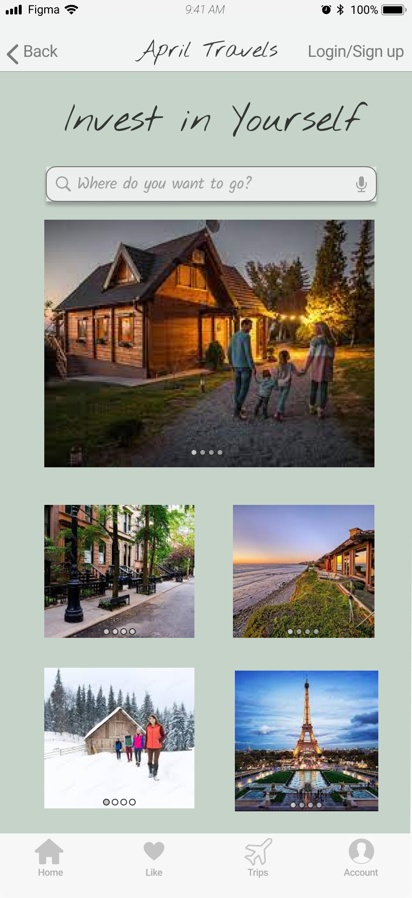
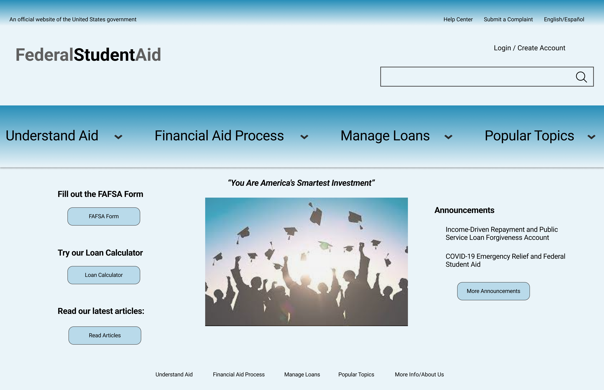

Hello, I'm April Safford
UX/UI Designer Driven to Innovate
I'm thoughtful and passionate about human-centered design solutions. My flexibility and dedication are shown through my various collaborations and projects.
I'm thoughtful and passionate about human-centered design solutions. My flexibility and dedication are shown through my various collaborations and projects.
I conducted user research to understand user pain points and define insights for a problem statement. Then executed ideation and prototyping of the app. After more testing, we came to the conclusion of how the app could be further iterated.
With a partner, I helped redesign a government website. Together we conducted user research, testing and design inspiration. We defined a problem and designed information architecture. We created a low-fidelity wireframe with prototyping and testing.
In a group of 5 people, we learned about our audience by conducting user research. We conducted a user and task analysis and defined a UI information system structure. We also conducted usability and user testing on a low fidelity prototype, and created a high-fidelity prototype across multiple screens.